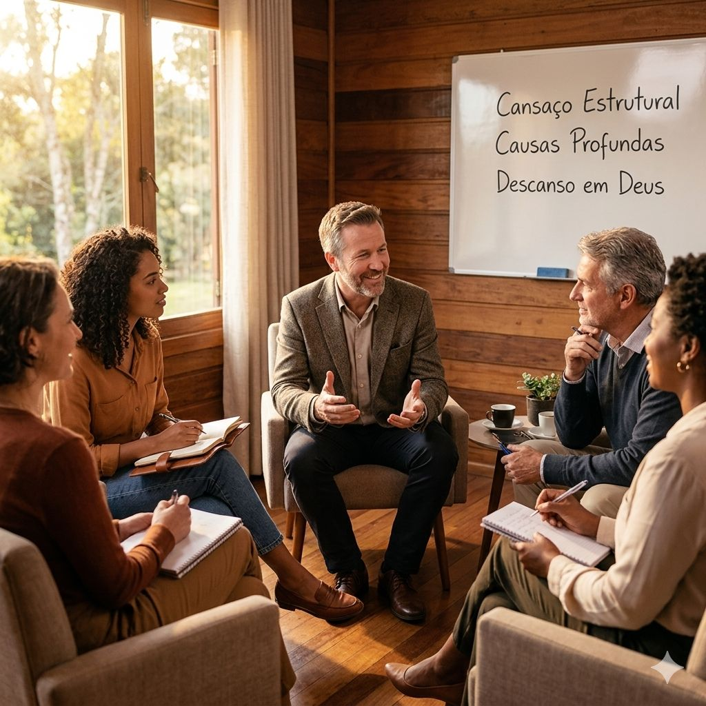
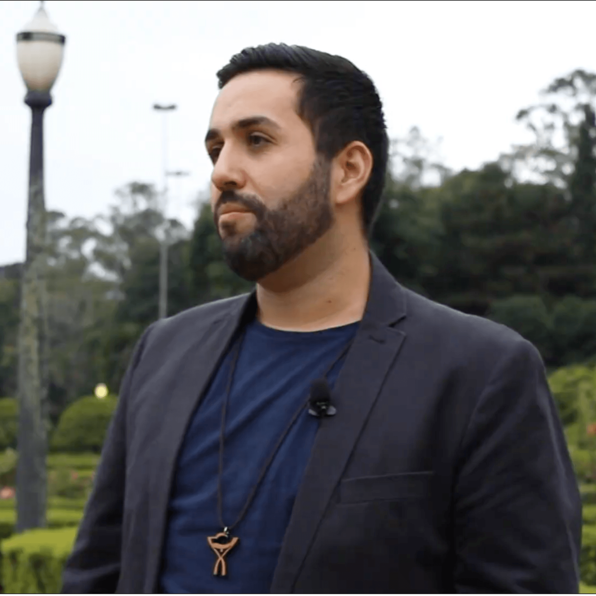
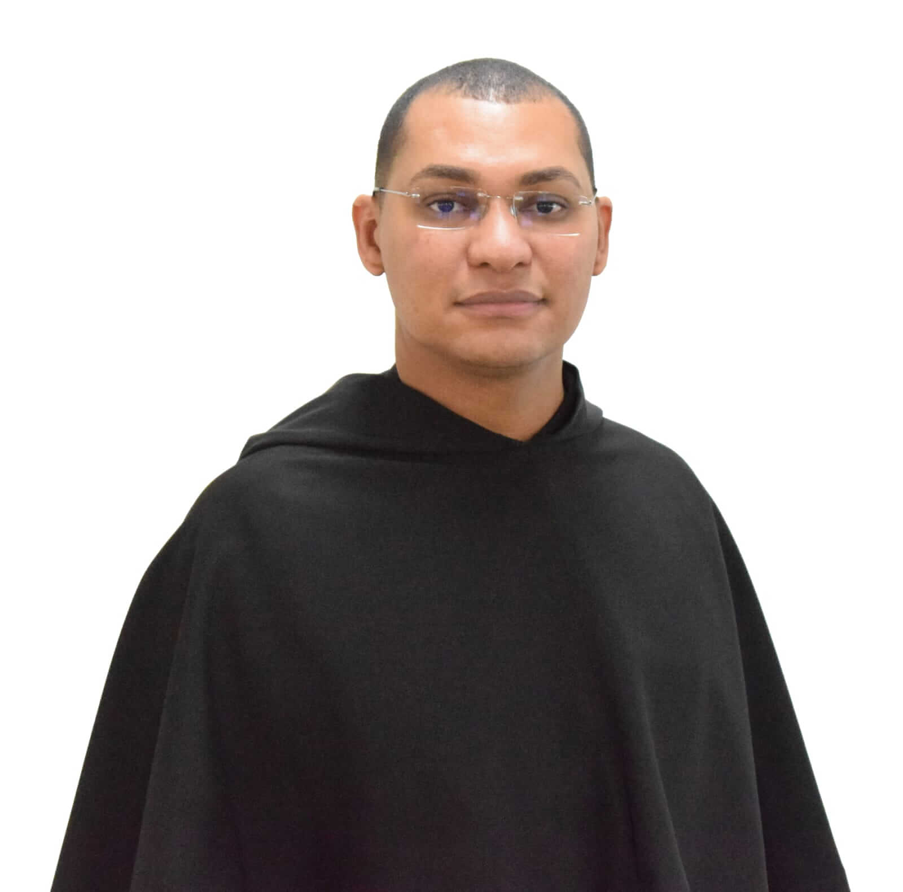
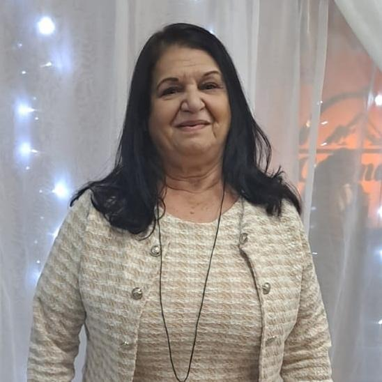
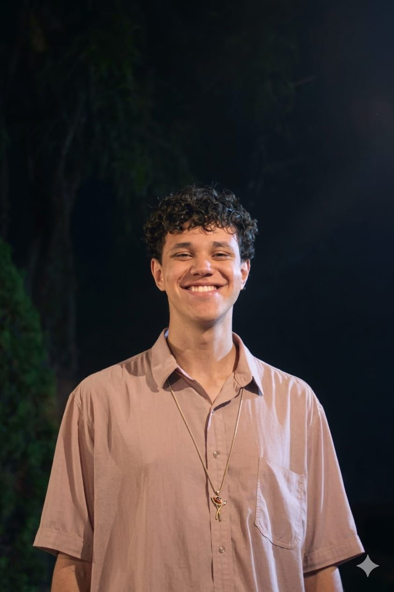
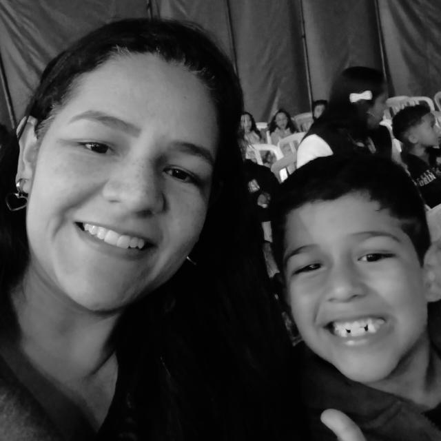

Imersão Cansaço - Vinde a mim vós que estais cansados (Mt 11, 28)
A Imersão é uma jornada em 8 encontros para compreender as raízes do desgaste físico, mental, emocional e espiritual, encontrando em Cristo caminhos concretos de renovação, equilíbrio e paz.
Participe conosco!
A imersão nasce da constatação de que o cansaço tornou-se uma experiência estrutural contemporânea.
Não é apenas fadiga física, mas um fenômeno que atinge o ser humano em sua totalidade: corpo, mente, espírito e relações.
Uma resposta integral à condição humana.
Venha aprender a descansarA imersão propõe uma jornada que integra:
dos tipos de cansaço
das causas profundas
de padrões disfuncionais
concretos de descanso
A imersão responde a uma necessidade pastoral urgente: o cuidado com aqueles que servem, prevenindo o esgotamento e promovendo uma vida equilibrada e fecunda.
Uma jornada de 8 módulos para cura, reorganização e descanso em Deus.

Fundador e moderador geral da Comunidade Católica Eucaristós. Formado em relações internacionais e Counseling
Médica especialista em Medicina de Família e Comunidade, com residência médica pelo Hospital Israelita Albert Einstein.
Missionário Católico da Arquidiocese de Belém Doutor em Educação e Saúde; Mestre em Educação e Gestão do Conhecimento. Criador do Método Gaudium
Psicóloga e pós graduada em Filosofia Clínica e Coaching Ontológico Aplicada a Gestão de Pessoas. Fundadora do EMIS - Espaço Multidisciplinar Integração do Saber

Ordem de Santo Agostinho - Província Agostiniana do Brasil Bacharelado e Licenciatura em Filosofia Bacharelado em Teologia
DIAS E HORÁRIO
Todas as TERÇAS
E QUINTAS de Julho
LOCALIZAÇÃO
Trav. Nossa
Senhora da Penha, nº 26 - São Paulo/SP
Opte preferencialmente pela opção de participação presencial. Assim você dará mais qualidade ao momentos de espiritualidade e de interação com nossos convidados.
Participe Presencialmente!A transmissão online será ao vivo via Youtube apenas para inscritos, e ficará disponível para assistir por 24 horas após o término de cada aula.
Enquanto os alunos do presencial vivem a experiência física, os alunos do on-line receberão as transmissões com alta qualidade e suporte contínuo da nossa equipe.
Por apenas R$10,00 adicionais, garanta acesso às aulas por 1 ano na plataforma Hotmart.
"Participei de todas as Imersões desde o início, mas esta sobre a "Vontade" em 2025 marcou profundamente meu coração. Entendi que Deus respeita minha liberdade e me chama a responder ao Seu amor com confiança. Aprendi a discernir melhor o que vem de Deus e o que vem apenas de mim. Foi transformador.""

"Participar do imersão sobre a vontade me ajudou a olhar com muito mais caridade para mim mesmo. Minha vontade passa por muitas áreas dentro de mim e pode significar muitas coisas. Entender isso me ajudou a ter mais autoconsciência e pertença da minha própria vida. Fiquei muito surpreendido de como tratar de assuntos dessa forma pode mudar para melhor minha visão sobre as coisas. Faço questão de estar na próxima imersão!"

"Já participei de dez edições do Imersão e cada ano foi experiência diferente. A gente pensa que sabe de tudo, que não precisa de ajuda, mas conforme vai vivenciando e vivendo o imersão, vai percebendo que não se cuida direito, que não dá valor pro próprio tempo, pra própria vida, acabamos se perdendo de quem a gente é. Depois de todos esses ano pude entender os movimentos de Deus na minha vida e a importância de cuidar da minha saúde, do emocional. O imersão sempre é esperado com muita expectativa rsrs por que Deus sempre tem algo novo para nós…"
"Participar do imersão foi muito mais do que adquirir conhecimento sobre um tema; foi uma experiência transformadora que tocou profundamente minha vida e minha fé. Sou imensamente grata por todo o ensinamento passado,com profissionais maravilhosos que atuam na area, cada aprendizado foi uma oportunidade de crescer espiritualmente e compreender ainda mais o amor infinito de Deus por nós. Agradeço a comunidade Eucaristos por proporcionar essa riqueza de curso."

Pagamento no Pix ou Cartão
local_activity GARANTIR MINHA VAGAlock Você será redirecionado para o ambiente seguro